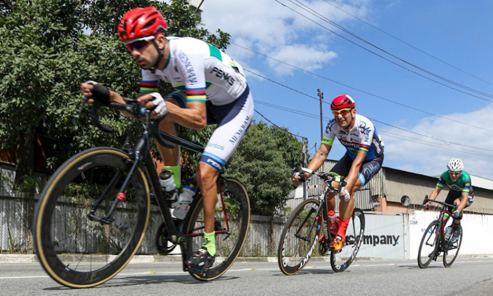
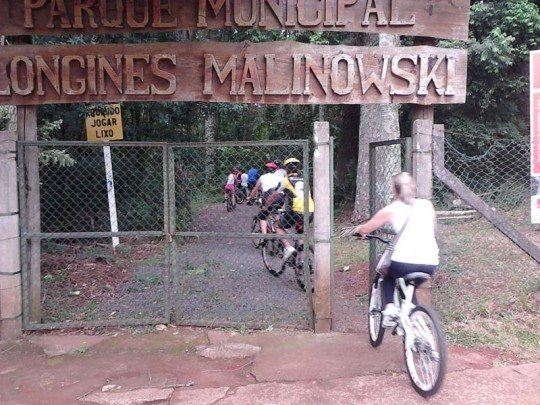

Características
O ciclismo é um dos esportes mais conhecidos e antigos que se conhece, em que pode ser dito como uma prática esportiva, ele também é usada como um meio de locomoção. Ele envolve a repetição de um movimento e que usa como meio de locomoção a bicicleta, podendo ser praticado em ruas, estradas ou parques. O ciclismo pode ser competitivo, recreativo e também praticado como forma de atividade física, tanto outdoor como indoor (como as aulas de spinning).
Desse modo, se torna imprescritível comentar sobre as vantagens do mesmo:
- Emagrecer: em que seu metabolismo é acelerado por conta do movimento, fazendo com que seu corpo queime calorias mais rapidamente.
- Melhora o tônus muscular: o pedalar regularmente fará com que ganhe mais força muscular, principalmente na parte inferior do corpo.
- Proporciona bem-estar: ao pedalar fará com que seu corpo libere endorfina e serotoninas, o hormônio que causam a sensação de prazer.
- Aumenta o fôlego: Ao tornar a prática da bicicleta comum, acaba-se exercitando a respiração para aguentar as longas subidas.
- Não prejudica as articulações: para quem possui alguma restrição física, pode investir na bicicleta por como a mesma não tem um impacto direto com o chão, ele não será transmitido diretamente para as articulações.
- Reduz o colesterol: com a aceleração do metabolismo, substâncias como o colesterol ruim (LDL) será queimada mais rapidamente.
- Ajuda a prevenir e controlar o diabetes: andar de bicicleta ajuda a controlar o nível de açúcar no sangue estável.
- Controla a pressão arterial: pedalar também trabalha as veias e artérias, pois a contração e o relaxamento delas ficam mais rápido durante a atividade.
- Melhora a coordenação motora: por utilizar todo o seu corpo, essa prática faz com que seus reflexos fiquem mais rápidos e se tenha uma melhora na coordenação motora.
- Auxilia na recuperação de lesões ósseas e artrite: andar de bicicleta pode prevenir a osteoartrite e osteoporose.
Figura 1 - Exemplo Ciclismo na rua

Fonte: Olimpíada Todo Dia
Informações específicas da prática
Apesar de todas as vantagens apresentadas, andar de bicicleta pode ser algo perigoso então é necessário tomar alguns cuidados para garantir a segurança do ciclista, como faça manutenção na bicicleta de vez em quando, e use capacete; mantenha a atenção; não tenha pressa; respeite as regras de trânsito; sinalizar é o mais importante; nunca anda na contramão na ciclofaixa; não pare sem avisar; lembre-se que a calçada é para pedestre e deve-se sempre observar o movimento dos motoristas.
Local regional para praticar esta modalidade
Caso você tenha curiosidade em pedalar em Erechim, o local mais adequado para tal atividade é no parque Longines Malinowski, comumente conhecido como “mato da comissão”:
Parque Longines Malinowski, mais conhecido como "Mato da Comissão" (Erechim - RS)
Figura 2 - Ciclismo no Parque Longines Malinowski

Fonte: RGS Tur